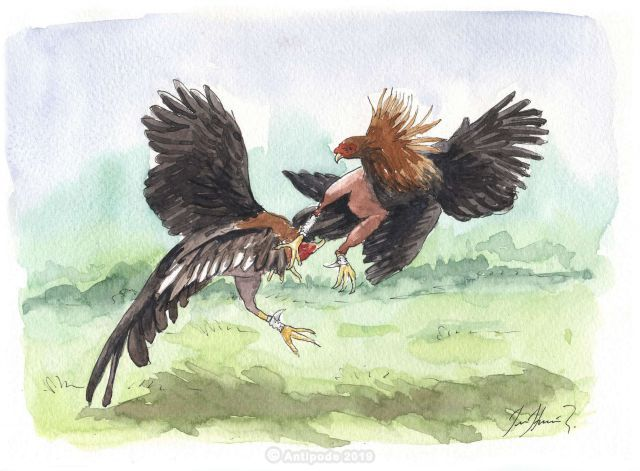
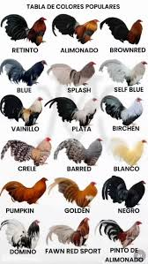
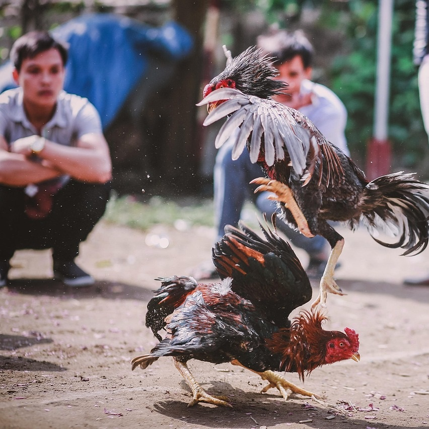
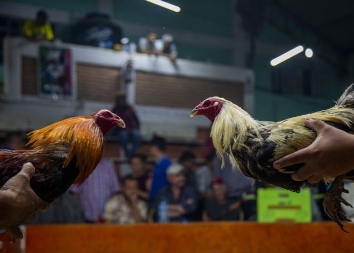
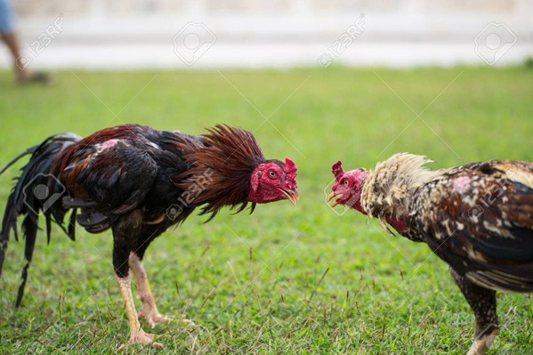
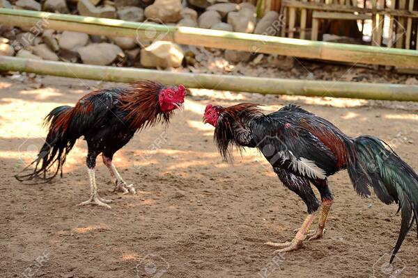
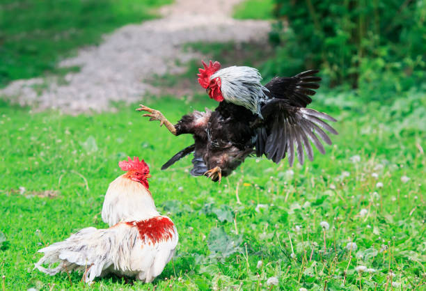
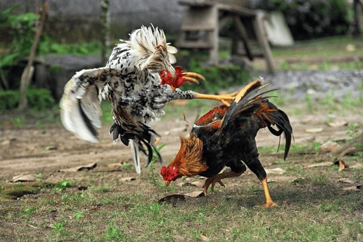

#1🐔¿Que significa realmente los gallos de pelea para la cultura peruana?

#2🤝En este tipos de gallo de combate, la variedad de especies se hace notar, desde España hasta casi todo el
continente americano

#3🌱Los origenes estan cargados de historiaL:
Lucha, emocion, y muchas disputas para que el combate de gallos
fuera legal y se vuelva parte de la cultura de hoy en dia de muchos paises

#4💲¿Que valor aporta para la cultura?
Es una muy buena pregunta y aqui te enseñaremos porque tiene gran
importancia para la cultura del pais entero y descubre todo el valor sentimental y cultural de las peleas
de
gallos


El espectaculo de cada fin de semana.

La ley del más fuerte en granjas.

Ese tipo de gallos no son de pelea, pero por el territorio hacen lo que sea.

Muchas veces, hacen competirlos; el que gana sobrevive y el que no se sacrifica por espacio en el corral.
-convertido-a-300x200.jpeg)